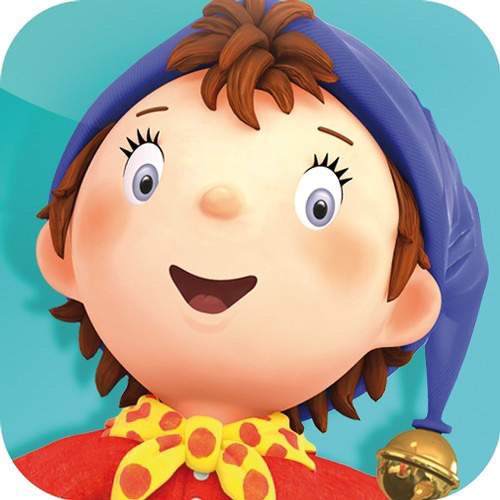
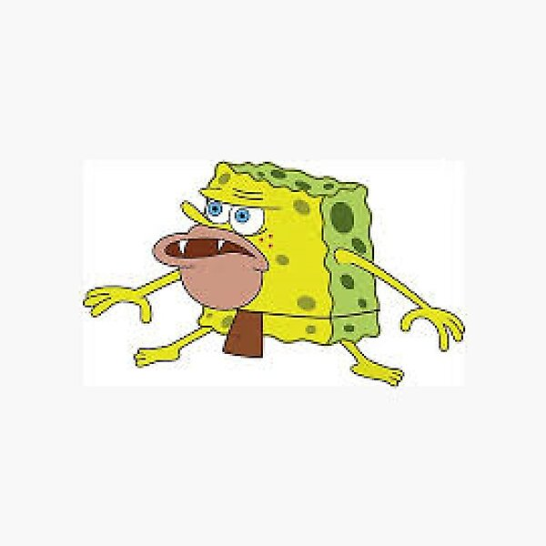

On verra ce qu'ont met la 🤷♂️
😈 Le Blog des Triso 😈
Le Benjamin :

Seul mammifère doté d'écailles en kératine qui couvrent la quasi totalité de son
corps à l'exception de son museau et son ventre, il est doté d'une langue immense
recouverte de salive visqueuse qui lui permet de fouiller les termitières pour en
retirer les insectes vivants...
En savoir plus
Le Bob des Cavernes :

Les Bob des Cavernes sont des animaux formant l'embranchement basal des métazoaires.
Ils sont définis comme des métazoaires sessiles à l'âge adulte. Ils possèdent
un système aquifère permettant la circulation (unidirectionnelle) de l'eau...
En savoir plus